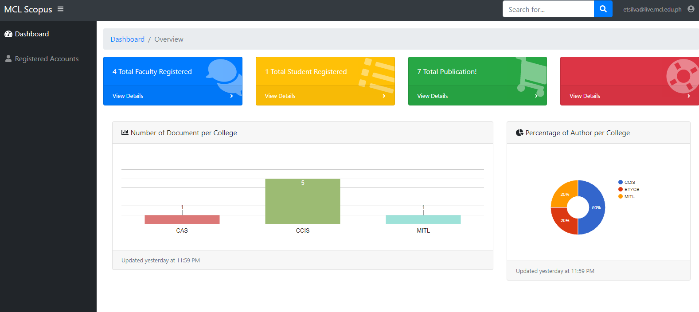
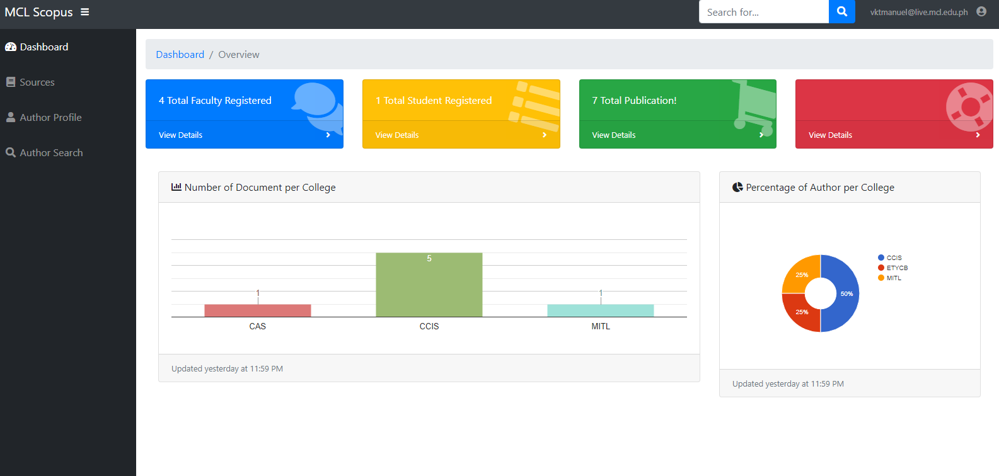

Scopus Indexed Research
Repository of research, documents and article at Malayan Colleges Laguna.

Scopus is a repository of documents of faculty members at Malayan Colleges Laguna. This repository is also use by students and faculty members of Malayan Colleges Laguna that is researching about their specific topics.
